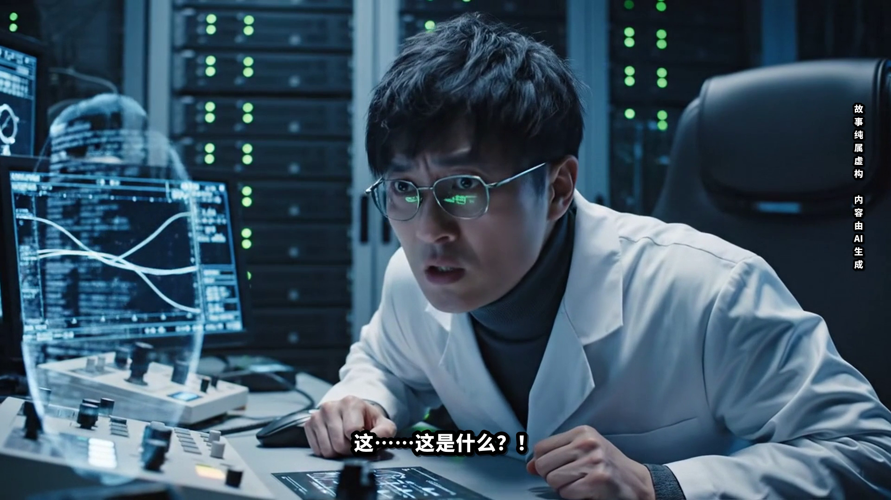
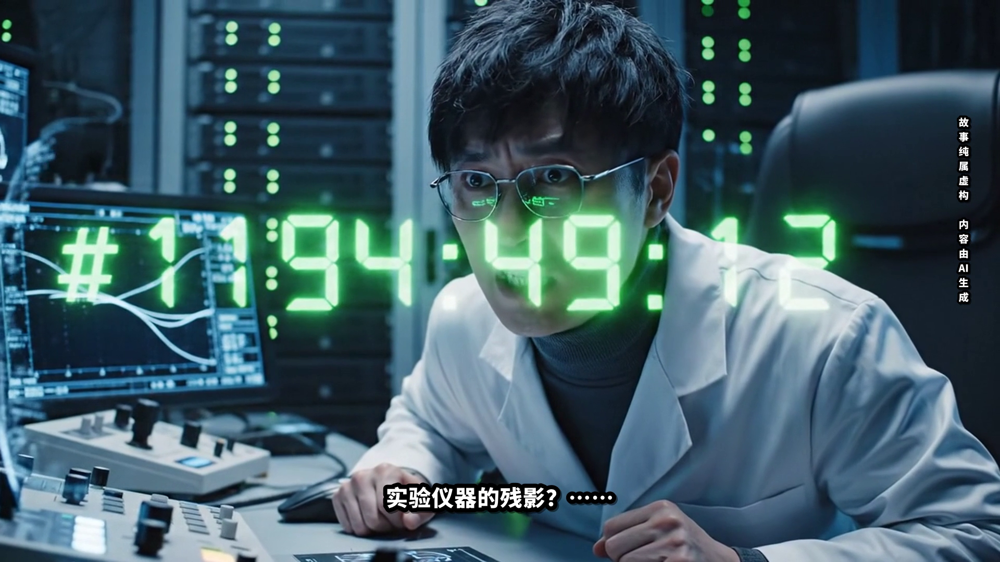
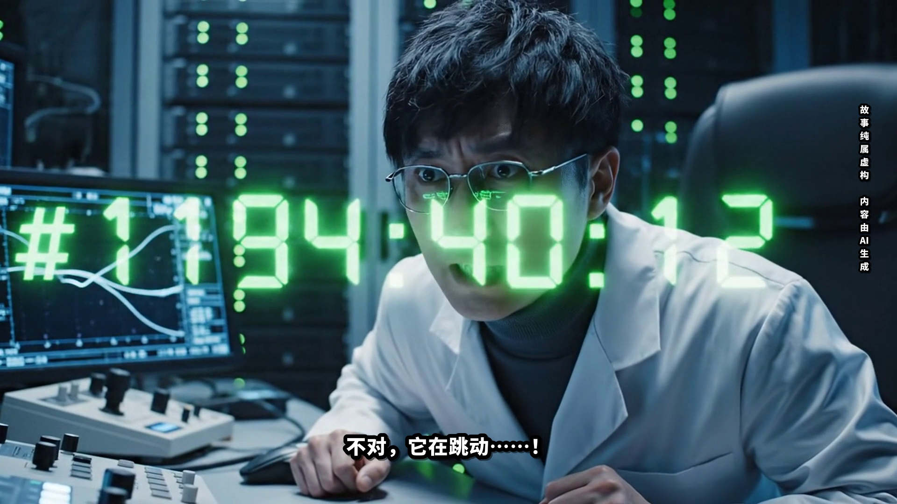
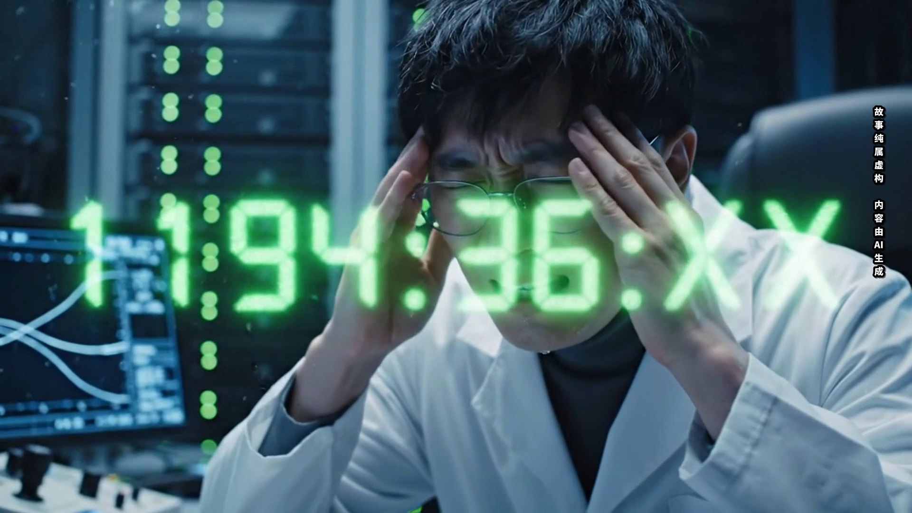

镜头一 · 突现倒计时
00:00 - 00:02
角色原声音轨：这……这是什么？！
剧情与画面：汪淼伏案工作，半透明翠绿幽灵数字突兀凭空浮现，慢速前推。
字幕核对：纯白字身 + 8px 纯黑粗描边，与真实原声发音 100% 对齐。

镜头二 · 惊疑残影
00:02 - 00:04
角色原声音轨：实验仪器的残影？……
剧情与画面：绿光映照瞳孔与钛金镜片，汪淼面露困惑与紧张。
字幕核对：台词完全一致，时间戳毫秒级吻合。

镜头三 · 惊骇跳动
00:04 - 00:07
角色原声音轨：不对，它在跳动……！
剧情与画面：数字跳动加速，汪淼瞳孔剧烈震颤，倒吸冷气失声惊呼。
字幕核对：情绪与语调声画同步，黑底白字防溢边。

镜头四 · 烙印视网膜
00:07 - 00:12
角色表现：急促喘息，摘镜抱头闭眼，极度绝望战栗。
剧情与画面：官方时间轴【延续镜头】顺承延展，汪淼紧闭双眼，数字在视网膜深处漆黑中永恒燃烧。
字幕规范：无台词处纯净留白，突显高压电磁脉冲声与视觉绝望。